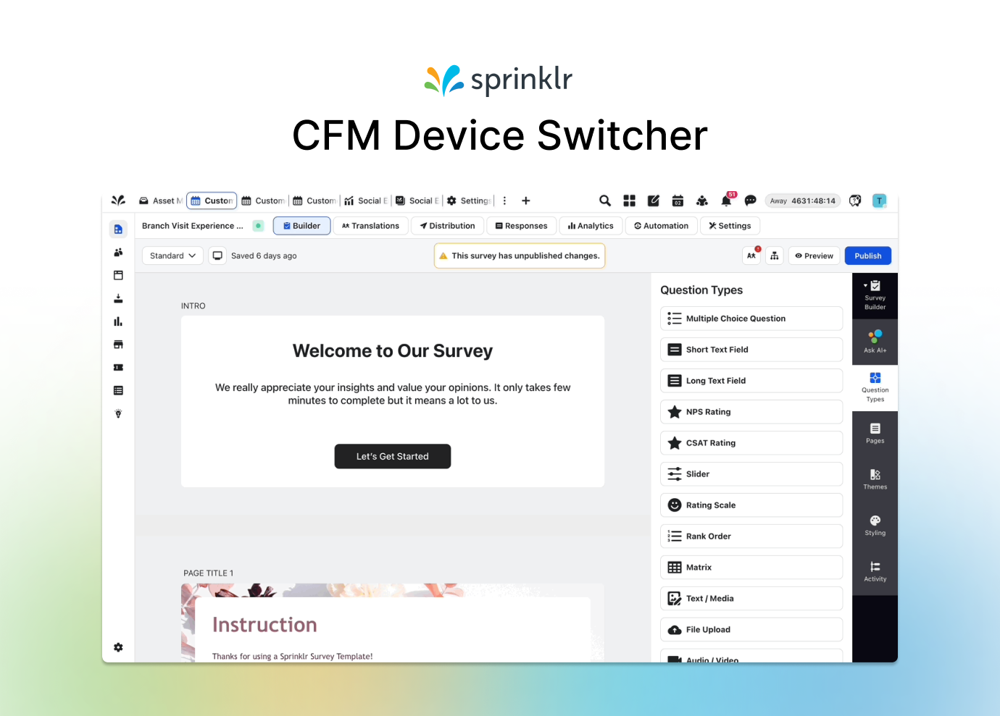

Preview every device without leaving the builder.
What began as a mobile alignment request became an in‑builder device preview.
- Role
- Product Design Intern
- Duration
- 1 week
- Tools used
- Figma · Jira
- Mentor
- Tanmay SinghDesign Manager — CFM
How I collaborated on this ticket.
I worked directly with the Lead Designer on design and the Product Manager on product decisions. The Senior Product Manager and Lead Engineers were secondary collaborators.
Me
Closest collaboration
Lead Designer
Direct collaboration
Product Manager
Secondary
Senior Product Manager
Secondary
Lead Engineers
The preview lived away from the decision.
Survey creators could configure a layout in the builder, but checking another device meant moving to a separate preview. The original request was a mobile alignment control; adding it alone would leave that checking loop intact.
Existing workflow
- Build survey
- Open preview
- Switch device
- Return to edit
Each adjustment sends the creator back through the same loop.
Design direction
- Build survey
- Switch canvas view
- Check layout in place
Bring device context to the point where the layout is being configured.
Make the layout visible, then make it adjustable.
I compared a small settings change with an in-builder preview model. The key tradeoff was how much of the creator’s checking loop each option could remove.
| Direction | What it offers | Tradeoff |
|---|---|---|
| Add mobile alignment | A control in the existing settings panel. | Smallest change; layout checks still happen elsewhere. |
| Add a device toggle | Device selection inside the builder. | Brings access closer, but needs responsive canvas behavior to be useful. |
| Responsive authoring Chosen direction | A device switcher, resizing canvas, and device-specific layout controls. | Broader scope, with viewport limits and survey configuration safety to define. |
My contribution: I mapped the preview loop, compared the alternatives, and defined the switcher interaction, alignment states, and custom viewport constraints.
One place to check every device.

Switch in context.
Desktop, Tablet, Mobile, and Custom live in the builder toolbar. Switching views resizes the canvas, so creators can check wrapping and spacing where they configure the survey.
Protect the survey configuration.
Changing the preview must leave question logic and saved configuration intact. Device-specific alignment needs to persist through save, clone, and duplicate workflows.
Make the editing boundary clear.
Inline editing stays in Web view. A notice explains this boundary and offers a direct Switch action, so creators know how to continue editing.
Device preview became part of authoring.
The implemented switcher brought device checking into the builder. The recording shows creators moving between desktop and mobile layouts while staying in the same workspace.
What changed
The work expanded from an isolated alignment setting into a device-aware authoring direction, with viewport behavior and configuration safety defined together.
What I learned
A small feature request can reveal a wider workflow problem. Comparing the alternatives helped me connect the original ask to a solution that still respected product constraints.